Ροπή Dance Studio, Λεωνίδου 6, Άγιος Δημήτριος (300 μ. από το μετρό Δάφνη)
Με τον Γιάννη Μεγαλακάκη. Για έναν κρητικό χορό που δεν είναι μόνο βήματα, αλλά τόποι, άνθρωποι, μνήμη και ζωή. Η θέση κατοχυρώνεται με προπληρωμή — περιορισμένος αριθμός συμμετοχών.
Δημαρχείο Νέας Αρτάκης · Εργαστήρι Πολιτισμού Νέας Αρτάκης «Παναγία Φανερωμένη»
Πρώτη συνάντηση – γνωριμία με τον Γιάννη Μεγαλακάκη. Διδασκαλία – μύηση σε χορούς από όλες τις επαρχίες της Κρήτης, για όλες τις ηλικίες και για όλα τα χορευτικά επίπεδα. Μύηση στην κρητική μουσική και στον χορευτικό αυτοσχεδιασμό.
Σύλλογος Κρητών & Φίλων Κρήτης Νέας Ιωνίας «Δίκταμος». Έναρξη διδασκαλίας – μύησης στους χορούς της Κρήτης για τη διδακτική-χορευτική περίοδο 2026 – 2027. Διδάσκει ο Γιάννης Μεγαλακάκης. «Η παράδοση ζει όταν τη μοιραζόμαστε.»
«Ο χορός είναι μνήμη, έκφραση, ιστορία και ταυτότητα.»
Ένα ταξίδι στην Κρήτη μέσα από τη γνώση — γνώση, έρευνα, παράδοση, πολιτισμός. Κάθε μήνα 4 επιμορφωτικά email και επιλεγμένη κρητική μουσική, με επιμέλεια, έρευνα και διδασκαλία του Γιάννη Μεγαλακάκη.
Κρητικοί χοροί
Κρητική μουσική
Κρητικοί καλλιτέχνες
Μαντινάδα
Ιστορία – αρχαιολογία
Ήθη, έθιμα & φυσικός πλούτος
Απευθείας στο email σας
Μελετάτε όποτε εσείς θέλετε
Περιεχόμενο από πολυετή έρευνα και επιτόπιες καταγραφές
Υλικό που δεν διδάσκεται σε συλλόγους και σχολές χορού
Πραγματοποιούν επιτόπιες καταγραφές και έρευνες στα χωριά της Κρήτης. Το 1997 χορεύουν στην τελετή έναρξης του Παγκόσμιου Πρωταθλήματος Στίβου στο Καλλιμάρμαρο Στάδιο, υπό τη σκηνοθεσία του Βαγγέλη Παπαθανασίου. Το 1998 ιδρύουν την «Ομάδα Έκφρασης Κρητικών Χορών». Το 2004 χορεύουν στην τελετή λήξης των Ολυμπιακών Αγώνων της Αθήνας, στο Ολυμπιακό Στάδιο (Ο.Α.Κ.Α.), υπό τη σκηνοθεσία του Δημήτρη Παπαϊωάννου. Το 2006 κυκλοφορούν την έκδοση «Όταν ακούω Κρήτη».
Έχουν παρουσιάσει πρωτότυπες παραστάσεις και ειδικές εμφανίσεις στο Νέο Μουσείο Μπενάκη, στο θέατρο Παλλάς, στο Θέατρο Βράχων, στο θέατρο Badminton, στο Ευγενίδειο Ίδρυμα, στο Ίδρυμα Μιχάλης Κακογιάννης, στο θέατρο Παπάγου, στο θέατρο Λυκαβηττού και αλλού, συνεργαζόμενοι με τα μεγαλύτερα ονόματα της κρητικής μουσικής και της έντεχνης ελληνικής μουσικής, όπως ο Ψαραντώνης, ο Βασίλης Σκουλάς, ο Λουδοβίκος των Ανωγείων, ο Μανώλης Λιδάκης, η Ευανθία Ρεμπούτσικα, ο Μιχάλης Τζουγανάκης και πολλοί άλλοι. Έχουν επίσης συνεργαστεί με τον σκηνοθέτη Γιάννη Σμαραγδή για την ταινία «El Greco» και με τον σκηνοθέτη Θοδωρή Παπαδουλάκη για την τηλεοπτική σειρά «Το Νησί». Έχουν πραγματοποιήσει πάνω από 200 σεμινάρια κρητικών χορών σε όλους τους νομούς της Ελλάδας και σε πολλές πόλεις της Ευρώπης, της Αμερικής, του Καναδά και της Αυστραλίας.
Η οικογένειά τους έπαιξε καθοριστικό ρόλο για την ουσιαστική ενασχόλησή τους με τον κρητικό πολιτισμό. Ο πατέρας τους Γιάννης είναι από το χωριό Εμπρόσνερο του δήμου Αποκορώνου Χανίων. Η μητέρα τους Γεωργία είναι από το χωριό Αστέρι του δήμου Αρκαδίου Ρεθύμνης. Το 1981, σε πολύ μικρή ηλικία, ξεκίνησαν να μαθαίνουν κρητικούς χορούς. Στην παιδική και εφηβική τους ηλικία χόρεψαν σε πολλά γλέντια και εκδηλώσεις με σημαντικούς κρητικούς καλλιτέχνες, όπως ο Κώστας Μουντάκης, ο Θανάσης Σκορδαλός, ο Λεωνίδας Κλάδος, ο Κώστας Παπαδάκης [Ναύτης], ο Μιχάλης Κουνελάκης [Κουνέλης], ο Σπύρος Σηφογιωργάκης, ο Ροδάμανθος Ανδρουλάκης, ο Γεράσιμος Σταματογιαννάκης, ο Νίκος Σκευάκης, ο Νίκος Μανιάς, ο Νικηφόρος Αεράκης, ο Βασίλης Σκουλάς και πολλοί ακόμα. Το 1994 ξεκίνησαν να διδάσκουν σε κρητικούς συλλόγους και πολιτιστικούς φορείς. Από τότε μέχρι και σήμερα προσπαθούν να ερευνήσουν σε βάθος τους χορούς, τη μουσική, την ιστορία, τη λαογραφία, τα ήθη, τα έθιμα και τις συνήθειες των Κρητών.
Έρχονται συνέχεια σε επαφή με τα χωριά της Κρήτης για να διασταυρώσουν πληροφορίες από ηλικιωμένους ανθρώπους, από μουσικούς, από παλιούς μερακλήδες, και παίρνουν ντοκουμέντα από αρχεία βιβλιοθηκών, μουσείων, συλλογών, λαογράφων και επιστημόνων, για να δημιουργήσουν μια ολοκληρωμένη διδασκαλία, βασισμένη σε επιτόπιες καταγραφές και έρευνες. Επιθυμούν να παρουσιάσουν την αληθινή Κρήτη, αυτή που δεν έχει σχέση με τον τουρισμό και το φολκλόρ. Όραμα της ζωής τους είναι να αναδείξουν και να διαδώσουν τη φιλοσοφία, την ιστορία και την τέχνη του κρητικού χορού. Την αντιμετωπίζουν ως ένα ζωντανό στοιχείο, το οποίο από γενιά σε γενιά εκφράζεται με διαφορετικό τρόπο. Πιστεύουν ότι το φολκλόρ και η κακή αισθητική είναι ο μεγαλύτερος εχθρός της τέχνης, και εστιάζουν πάρα πολύ στο αυτοσχεδιαστικό ταλέντο του κάθε χορευτή της ομάδας τους.
Πολλά άρθρα τους σχετικά με την κρητική μουσικοχορευτική παράδοση έχουν δημοσιευτεί στον έντυπο και ηλεκτρονικό τύπο. Έχουν πραγματοποιήσει πάρα πολλές τηλεοπτικές εμφανίσεις με τη χορευτική τους Ομάδα και έχουν βραβευθεί από πολλούς πολιτιστικούς φορείς, όπως η Παγκρήτιος Ένωση Αθηνών, η Παγκρήτιος Μελβούρνης Αυστραλίας, και από τους συλλόγους στους οποίους έχουν διατελέσει χοροδιδάσκαλοι.
Η διαδρομή μας
Από τα γλέντια της Κρήτης, στις μεγάλες σκηνές
1981
Σε πολύ μικρή ηλικία ξεκινούν να μαθαίνουν κρητικούς χορούς.
1994
Ξεκινούν να διδάσκουν σε κρητικούς συλλόγους και πολιτιστικούς φορείς.
Ιδρύουν τη χορευτική τους Ομάδα, με αρχική επωνυμία «Κρητικός Παραδοσιακός Όμιλος».
2004
Τελετή λήξης των Ολυμπιακών Αγώνων της Αθήνας, Ο.Α.Κ.Α. — σκηνοθεσία Δημήτρη Παπαϊωάννου.
2006
«Όταν ακούω Κρήτη» σε DVD και CD (Σείστρον) και η σκηνή του χορού στην ταινία «El Greco».
2008
EXPO 2008 στη Σαραγόσα: ο κρητικός χορός συναντά επί σκηνής το flamenco.
2009
Η Ομάδα μετονομάζεται σε «Ομάδα Έκφρασης Κρητικών Χορών».
2010
Το βιβλίο «Χορογράφοντας» και η διδασκαλία κρητικών χορών στους πρωταγωνιστές της σειράς «Το νησί».
2011
Η ταινία-ντοκιμαντέρ «Χορεύω αιώνες στην Κρήτη» στο Ευγενίδειο Ίδρυμα – Πλανητάριο.
2016
«Λαβύρινθος» στο θέατρο Παλλάς: για πρώτη φορά ο κρητικός χορός συναντά τον σύγχρονο χορό.
2017
Τέσσερις θεματικές διαλέξεις στο Μουσείο «Αγγελική Χατζημιχάλη».
2018
Είκοσι χρόνια Ομάδας, με παραστάσεις στη Σφίγγα.
Σήμερα
Πάνω από 200 σεμινάρια σε Ελλάδα, Ευρώπη, Αμερική, Καναδά και Αυστραλία — και ο χορός συνεχίζεται.
Η ομάδα
Ομάδα Έκφρασης Κρητικών Χορών
Η χορευτική Ομάδα δημιουργήθηκε το 1998, με αρχική επωνυμία «Κρητικός Παραδοσιακός Όμιλος», κάτω από πολύ δύσκολες συνθήκες για τα δεδομένα εκείνης της περιόδου. Το 2009 μετονομάστηκε σε «Ομάδα Έκφρασης Κρητικών Χορών», αφού πλέον, εκτός από την έρευνα και την καταγραφή των κρητικών χορών, έχουμε προσανατολιστεί και στην καλλιτεχνική έκφρασή τους, με παρουσίαση παραστάσεων σε συγκεκριμένους θεατρικούς χώρους και μουσικές σκηνές. Όραμά μας, η ουσιαστική ανάδειξη και προβολή της ιστορίας και τέχνης του κρητικού χορού σε ολόκληρο τον κόσμο.
Η καταγραφή των χορών για εμάς εδώ και αρκετά χρόνια είναι η σημαντικότερη δραστηριότητα που έχουμε αναπτύξει, διότι μας ενδιαφέρει ο αληθινός τρόπος έκφρασης των κρητικών χορών και τα συναισθήματα που νιώθουμε για κάθε χορό ξεχωριστά. Η πηγή για την ατόφια και αυθεντική έκφραση των κρητικών χορών είναι τα χωριά της Κρήτης. Πρέπει να διατηρήσουμε μια δημιουργική σχέση με το παρελθόν και τους προγόνους μας και, διδασκόμενοι απ’ αυτό, να προχωρήσουμε στο μέλλον.
Η αγάπη μας για την Κρήτη, τα προσωπικά μας βιώματα από την οικογένειά μας και η απόλυτη ψυχική έκφραση που νιώθουμε όταν χορεύουμε ήταν τα «εφόδιά» μας και ο κινητήριος μοχλός για να δημιουργήσουμε έναν πολιτιστικό φορέα με πολύπλευρους στόχους και βασικές αρχές. Η έρευνα της κρητικής μουσικοχορευτικής παράδοσης, η κρητική διάλεκτος, τα κρητικά τοπωνύμια, το μεγαλείο των ηθών των προγόνων μας, η πορεία της κρητικής ενδυμασίας μέσα στους αιώνες και η σχέση του κρητικού πολιτισμού με τον παγκόσμιο αποτελούν κάποιους από τους λόγους της δημιουργίας της Ομάδας, με στόχο, μέσα από την ενασχόλησή μας, την έρευνά μας, τη διδασκαλία μας αλλά προπάντων τη στάση ζωής μας, να συγκινήσουμε τους νέους ανθρώπους που έχουν ανάγκη όσο ποτέ άλλοτε να εμπνευστούν και να δημιουργήσουν με βάση γνήσια πρότυπα αξιών και ανθρώπων.
Έχοντας ως απαραίτητους οδηγούς την αγάπη και την απόλυτη προσήλωση σ’ εκείνα τα στοιχεία που καταξίωσαν διαχρονικά την κρητική πολιτιστική παράδοση, προσπαθούμε συστηματικά να ενσκύψουμε και να διερευνήσουμε μια σειρά από παραδοσιακές μορφές λαϊκής έκφρασης, δημιουργίας και συμπεριφοράς. Στόχος μας δεν αποτελεί η απλή και στείρα πολλές φορές αναπαραγωγή και μεταφορά στο σήμερα των χορών, των τραγουδιών, των ηθών, των εθίμων και των συνηθειών της κρητικής λαϊκής παράδοσης, όσο η ανάδειξή τους ως κυρίαρχες μορφές έκφρασης και καλλιτεχνικής δημιουργίας που χαρακτηρίζονται από ιδιαιτερότητα και μοναδικότητα.
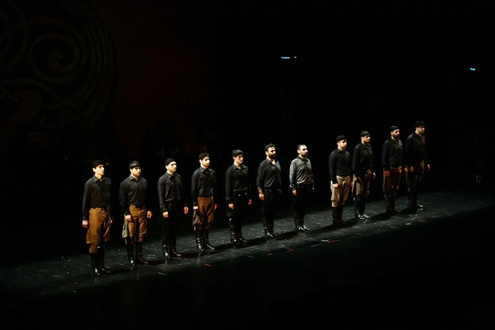
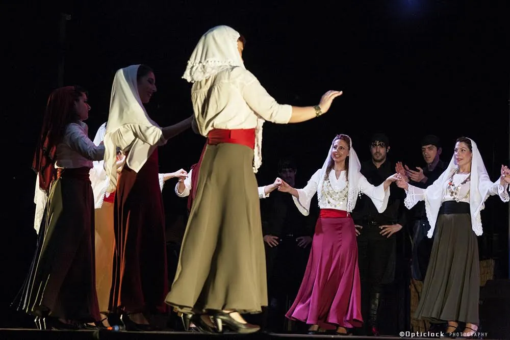
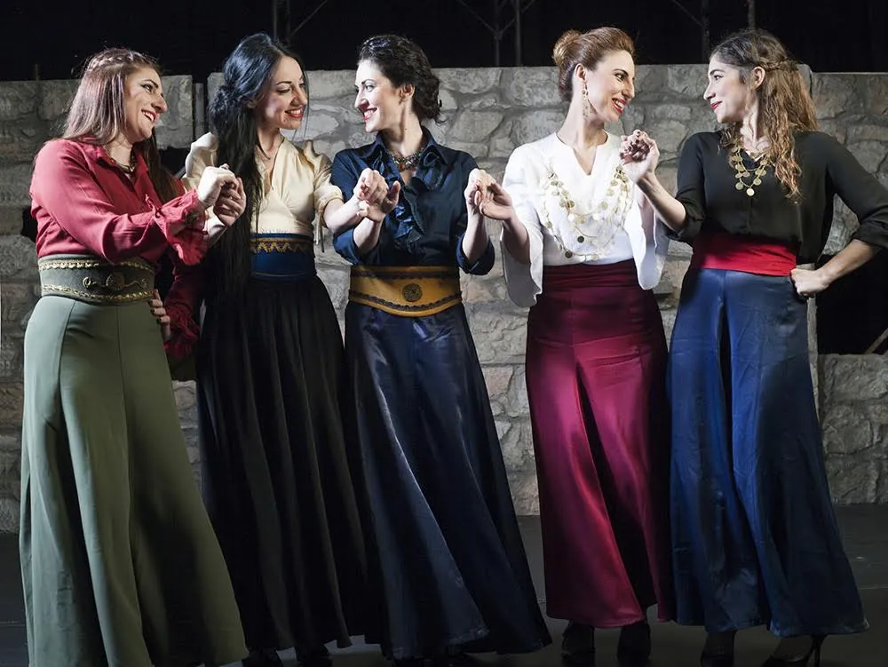
10 χρόνια δράσης της Ομάδας
«…Όταν σφίγγω το χέρι του και τον κοιτάζω στα μάτια αισθάνομαι κάθε φορά το ίδιο… ευλογημένε μου αδερφέ, αυτή η εικόνα… πιασμένοι να χορεύουμε μας ακολουθεί από 5 χρονών… γίναμε άντρες… να γεράσουμε έτσι θέε μου… καλοστρατιά μας…»
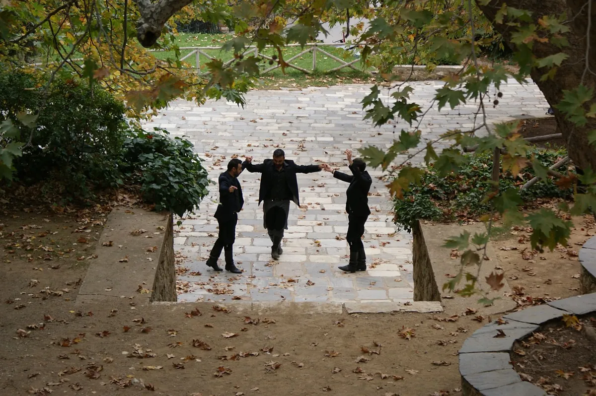
Η φιλοσοφία μας
Θέλουμε να παρουσιάσουμε την αληθινή Κρήτη
Το φολκλόρ και η κακή αισθητική είναι ο μεγαλύτερος εχθρός της τέχνης. Εστιάζουμε πάρα πολύ στο αυτοσχεδιαστικό ταλέντο και τη χορευτική ικανότητα του κάθε χορευτή μας.
Δεν μας ενδιαφέρει οι χορευτές μας να φοράνε όλοι ακριβώς την ίδια φορεσιά όταν παρουσιάζουμε κρητικούς χορούς. Άλλωστε, σε ποια παρέα που θα χόρευε παλιά στην Κρήτη οι άνθρωποι φορούσαν όλοι τα ίδια ρούχα; Δεν πραγματοποιούμε ομαδικές φιγούρες στους κρητικούς χορούς, διότι πολύ απλά δεν έχουν καμία σχέση με τη χορευτική παράδοση της Κρήτης.
Τα βασικά βήματα των κρητικών χορών δεν αλλάζουν με το πέρασμα των χρόνων. Αλλάζουν όμως οι αυτοσχεδιασμοί, η φαντασία του κάθε χορευτή. Σήμερα δεν μπορούμε να χορέψουμε με το ύφος που χόρευαν το 1920· μπορούμε όμως να ερευνήσουμε τους παλιούς χορευτές, να συγκινηθούμε, να εμπνευστούμε και να δημιουργήσουμε το δικό μας χορευτικό ύφος. Υπάρχει μία μυστήρια σύνδεση με το παρελθόν, με τους προγόνους μας σε κάθε γωνιά της Κρήτης, τη στιγμή που τα πόδια μας χορεύουν τα βήματα που έχει χορέψει χιλιάδες χρόνια πριν αυτός ο λαός.
Διδάσκουμε την ιστορία του κάθε χορού, τις παραλλαγές από νομό σε νομό. Συζητάμε με τους μαθητές για τους κρητικούς καλλιτέχνες, τους παλιούς αλλά και τους νεότερους, και για τα κρητικά παραδοσιακά μουσικά όργανα. Οι μαθητές μας παρακολουθούν συχνά καταγραφές δικές μας από επιτόπιες έρευνες που πραγματοποιούμε στα χωριά της Κρήτης ή καταγραφές άλλων ερευνητών. Διδάσκουμε πάνω από 20 κρητικούς χορούς και τις παραλλαγές τους.
Τι κάνουμε
Παραστάσεις, σεμινάρια, ιστορίες
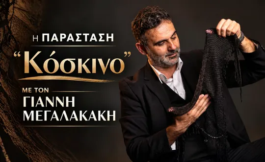
01
Η παράσταση «Κόσκινο»
Η παράσταση «Κόσκινο» με τον Γιάννη Μεγαλακάκη. Για ημερομηνίες και κρατήσεις, επικοινωνήστε μαζί μας.
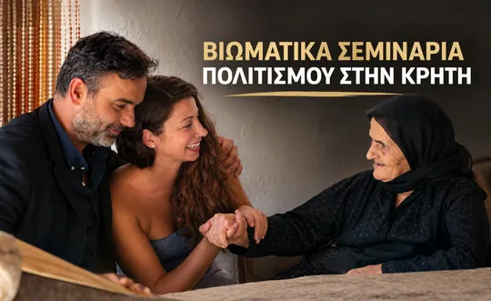
02
Βιωματικά σεμινάρια πολιτισμού στην Κρήτη
Σεμινάρια πολιτισμού στην ίδια την Κρήτη, κοντά στους τόπους και τους ανθρώπους της παράδοσης. Ρωτήστε μας για τα επόμενα.
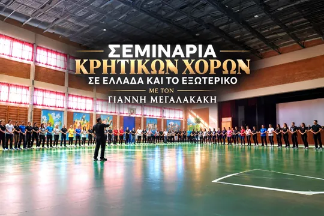
03
Σεμινάρια κρητικών χορών σε Ελλάδα και εξωτερικό
Πάνω από 200 σεμινάρια σε όλους τους νομούς της Ελλάδας και σε πόλεις της Ευρώπης, της Αμερικής, του Καναδά και της Αυστραλίας. Είμαστε στη διάθεση πολιτιστικών φορέων και χοροδιδασκάλων για συνεργασία.
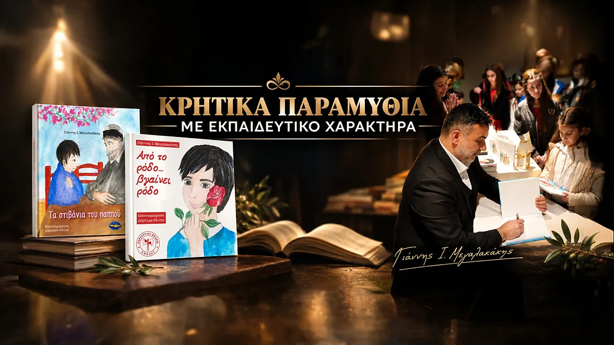
04
Κρητικά παραμύθια με εκπαιδευτικό χαρακτήρα
Τα παραμύθια του Γιάννη Μεγαλακάκη «Τα στιβάνια του παππού» και «Από το ρόδο… βγαίνει ρόδο», με εικονογράφηση της Δήμητρας Πέππα — για μικρούς και μεγάλους.
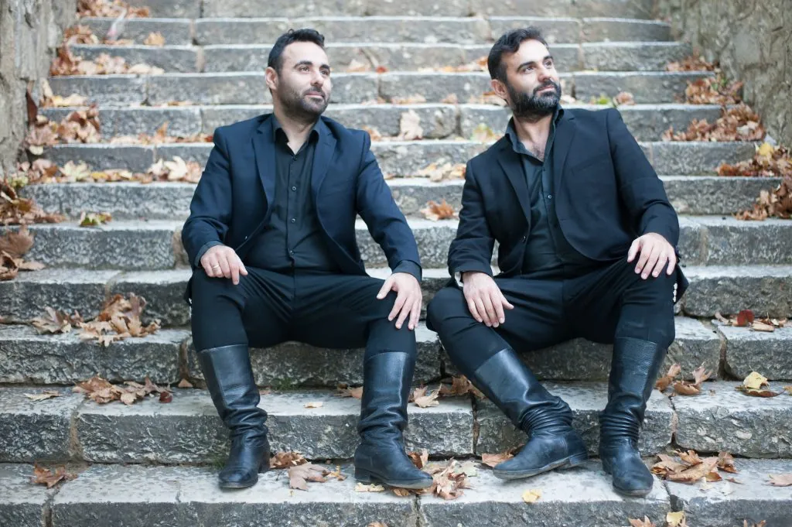
05
Ιδιαίτερες εμφανίσεις · Performances
Παραστάσεις και ειδικές εμφανίσεις σε θέατρα, μουσικές σκηνές και εκδηλώσεις, με το μουσικό σχήμα που επιλέγουμε κάθε φορά.
Εξειδικευμένα σεμινάρια κρητικών χορών
Όραμα & σκοπός
Εδώ και 20 χρόνια ταξιδεύουμε σε όλο τον κόσμο για να ανεβάσουμε το επίπεδο στην κρητική χορευτική έκφραση. Επιθυμούμε να καθιερώσουμε σε διάφορες πόλεις της Ελλάδας και του εξωτερικού μόνιμες συνεργασίες με αξιόπιστους πολιτιστικούς φορείς, για να διδάξουμε με σωστές προϋποθέσεις την τέχνη και την ιστορία των κρητικών χορών προς όφελος πολλών ανθρώπων που αγαπάνε την κρητική μουσικοχορευτική παράδοση, ανεξάρτητα από την καταγωγή τους.
Σε αυτό τον κύκλο διδασκαλίας, ο ενδιαφερόμενος θα διδαχτεί χορούς από ολόκληρη την Κρήτη, αυτοσχεδιασμούς – φιγούρες, θα γνωρίσει την κρητική παραδοσιακή μουσική, τους καλλιτέχνες, τη μαντινάδα, τα μουσικά όργανα και, το σημαντικότερο, θα μάθει να εκφράζει την ψυχή του μέσα από τον κρητικό χορό. Ο χορευτής θα διδαχθεί χορούς που έχουν προκύψει μετά από επιτόπια καταγραφή και έρευνα, άρα θα έρθει σε επαφή με την αλήθεια και την ουσία που κρύβουν οι κρητικοί χοροί.
Σε ποιους απευθύνεται
Σε πολιτιστικούς φορείς, συλλόγους, σχολές χορού και χορευτικές ομάδες που επιθυμούν τα μέλη τους να εντρυφήσουν στην τέχνη και την ιστορία του κρητικού χορού:
μαθητές κάθε ηλικίας άνω των 13 ετών, κάθε εθνικότητας και κάθε χορευτικού επιπέδου στους κρητικούς χορούς, αλλά και με γνώσεις (σε ερασιτεχνικό ή επαγγελματικό επίπεδο) σε άλλα είδη χορού·
χοροδιδάσκαλοι με γνώσεις και εξειδίκευση σε οποιοδήποτε είδος χορού (ελληνικών, ευρωπαϊκών, latin και οποιωνδήποτε άλλων).
Στόχος μας είναι η δημιουργία καταρτισμένων και εμπνευσμένων χοροδιδασκάλων, οι οποίοι θα μεταλαμπαδεύσουν τις γνώσεις τους στις χώρες διαμονής τους. Τελικός σκοπός, η αναβάθμιση της τέχνης του κρητικού χορού σε παγκόσμιο επίπεδο.
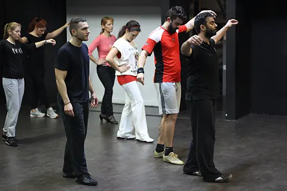
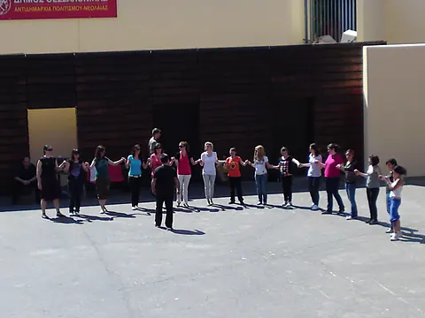
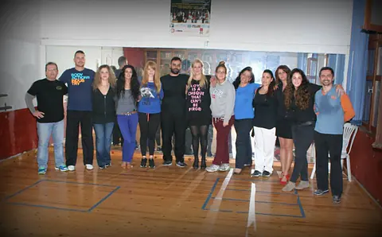
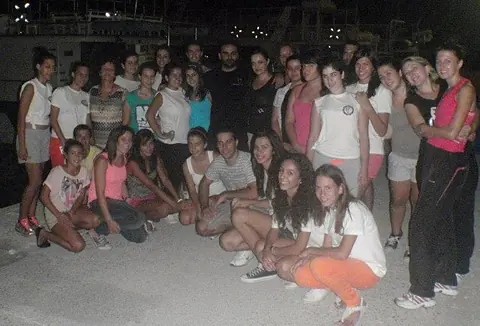
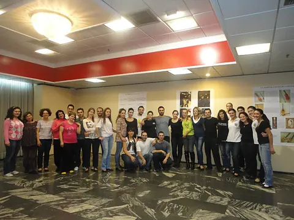
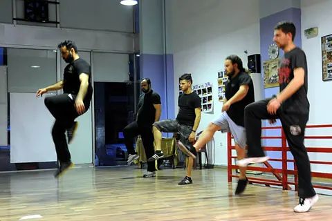
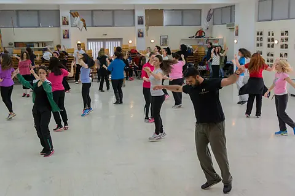
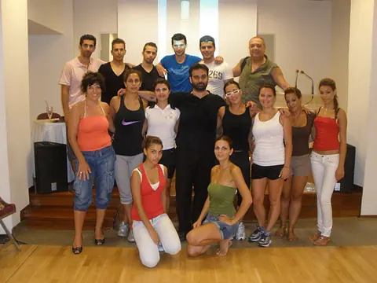
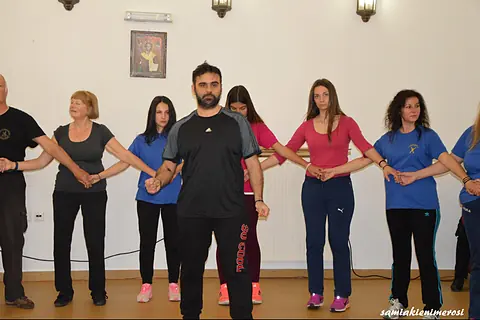
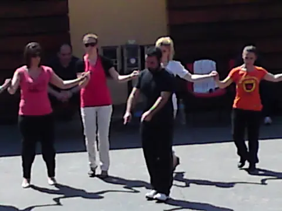
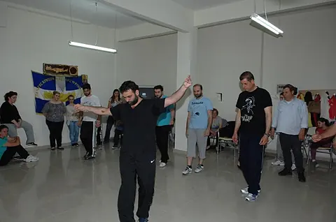
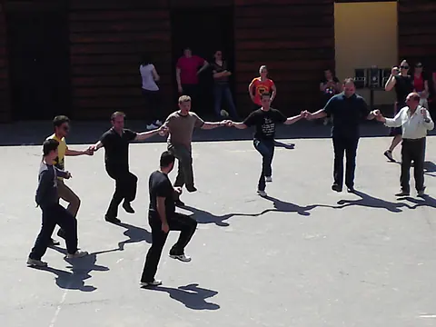
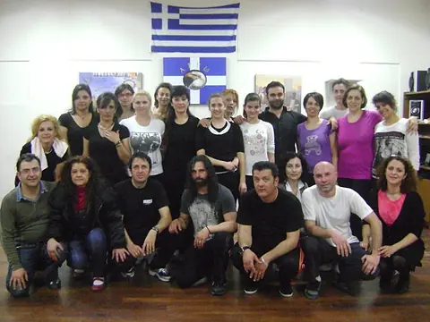
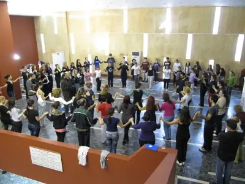
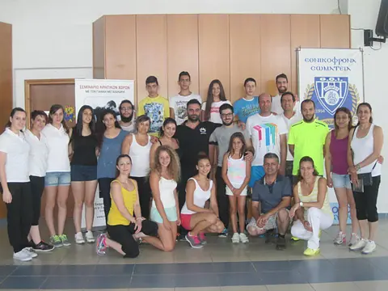
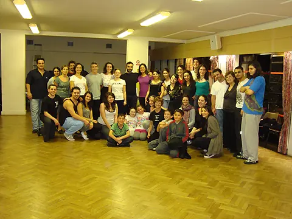
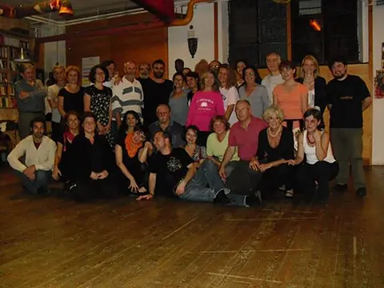
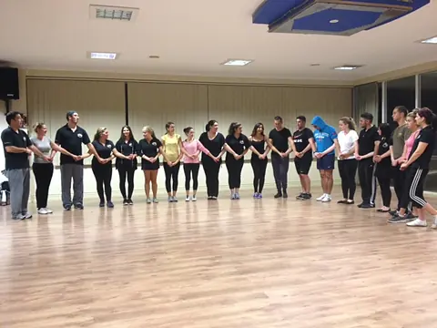
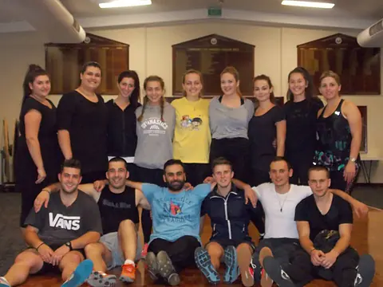
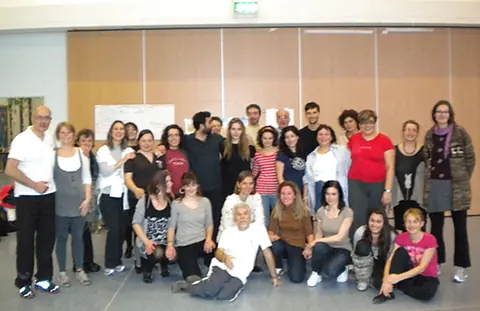
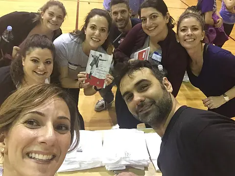
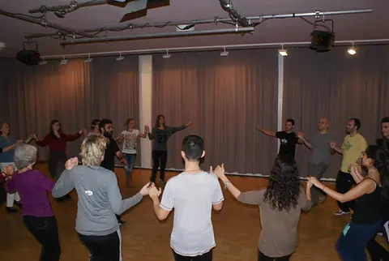
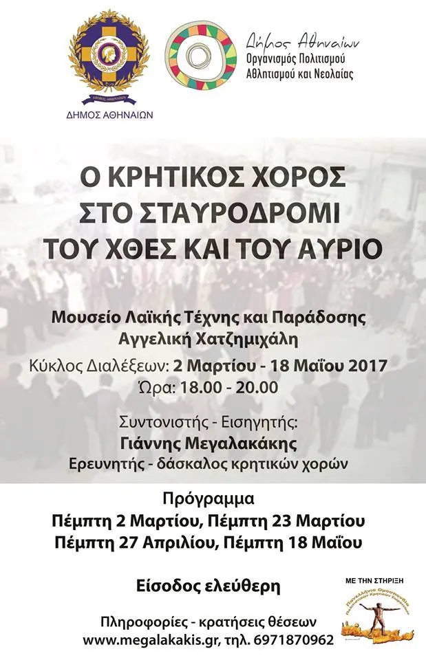
Διαλέξεις
Ο κρητικός χορός στο σταυροδρόμι του χθες και του αύριο
Το 2017 ξεκινήσαμε μία πολύ σημαντική πολιτιστική δράση, η οποία πραγματοποιήθηκε για πρώτη φορά στα πλαίσια του κρητικού χορού: τέσσερις θεματικές διαλέξεις του Γιάννη Μεγαλακάκη στο Μουσείο Λαϊκής Τέχνης και Παράδοσης «Αγγελική Χατζημιχάλη», με ελεύθερη είσοδο για όλους και την αρωγή του Δήμου Αθηναίων, μέσα από τις οποίες μεταδώσαμε πολιτιστικές ιδέες και προτάσεις μας σε πολιτιστικούς φορείς και σε νέους ανθρώπους που ασχολούνται με πάθος με τους κρητικούς χορούς.
Γιατί χορεύουμε «σήμερα» κρητικούς χορούς;
Τι σημαίνει τελικά «παράδοση»;
Πώς διδάσκεται ο κρητικός χορός;
Μπορούν οι σύγχρονοι άνθρωποι να χορέψουν όπως χόρευαν πριν από 50 χρόνια;
Ποιος είναι ο ρόλος του χοροδιδασκάλου κρητικών χορών στη σύγχρονη εποχή;
«Δεν αναζητούμε μαθητές. Αναζητούμε συνοδοιπόρους και συνεχιστές αντάξιους της ιστορίας μας.»
Παραστάσεις
Στη σκηνή από το 1998
Οι παραστάσεις της Ομάδας Έκφρασης Κρητικών Χορών Γιάννη & Γιώργου Μεγαλακάκη.
2018
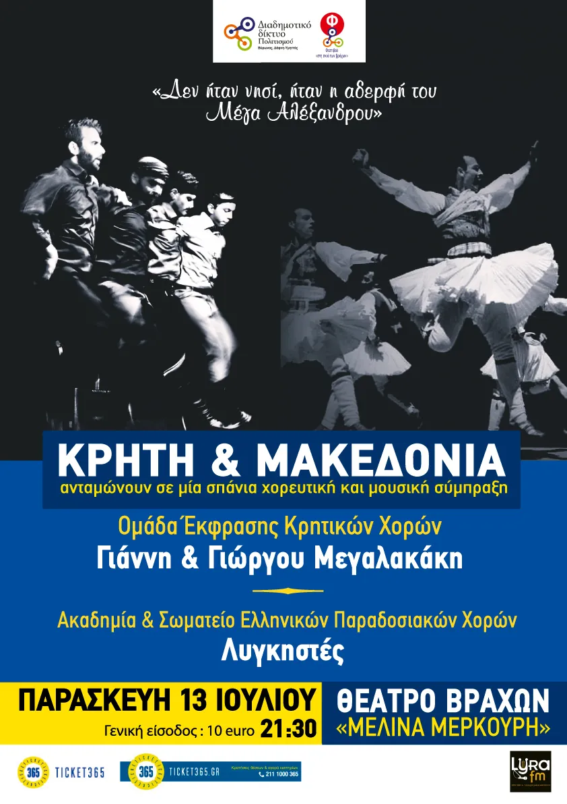
«Δεν ήταν νησί, ήταν η αδερφή του Μέγα Αλέξανδρου»
Εμπνεόμενοι από τους στίχους του Νίκου Καζαντζάκη τους οποίους μελοποίησε ο Μάνος Χατζιδάκις, σαν ένα ανοιχτό παράθυρο επικοινωνίας του παρελθόντος με το μέλλον, τα δύο αδέλφια απ’ την Κρήτη και δεξιοτέχνες χορευτές Γιάννης & Γιώργος Μεγαλακάκης με μία ομάδα επίλεκτων χορευτών και μουσικών, ενώνονται, δημιουργούν και συμπράττουν με μουσικούς και χορευτές της Ακαδημίας Ελληνικών Παραδοσιακών Χορών Λυγκηστές.
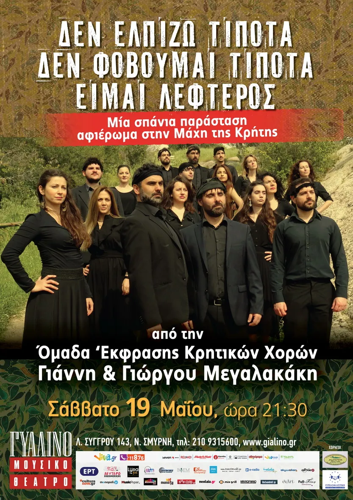
«Δεν ελπίζω τίποτα, δεν φοβούμαι τίποτα, είμαι λέφτερος»
Μία σπάνια παράσταση κρητικών χορών αφιερωμένη στη Μάχη της Κρήτης από την Ομάδα Έκφρασης Κρητικών Χορών Γιάννη και Γιώργου Μεγαλακάκη. Η επαναστατική φράση του Νίκου Καζαντζάκη μετουσιώνεται σε μία σπάνια παράσταση κρητικών χορών. Οι TIMES του Λονδίνου τόνιζαν: «Η Μάχη της Κρήτης υπήρξε το συναρπαστικότερο γεγονός του Β’ Παγκοσμίου Πολέμου και η αποθέωση του ανθρώπινου ηρωισμού».
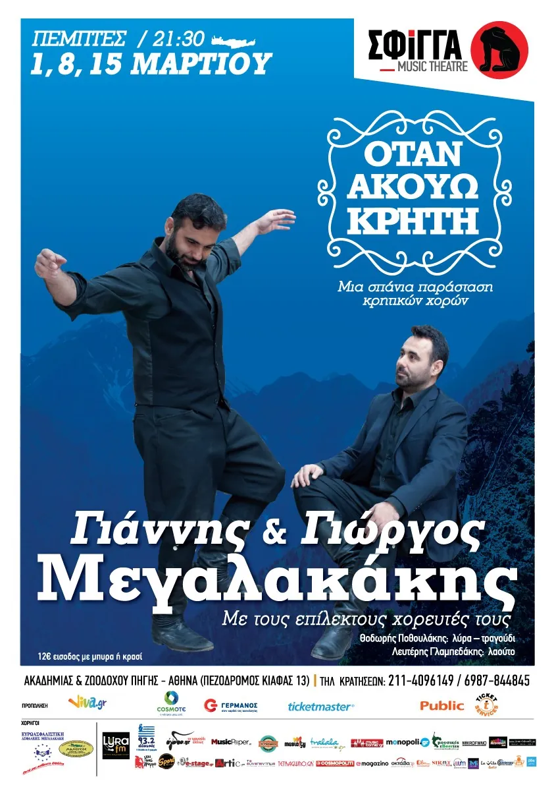
«Όταν ακούω Κρήτη · Σφίγγα»
Μία σπάνια παράσταση κρητικών χορών στη Σφίγγα, τις Πέμπτες 1, 8 και 15 Μαρτίου. Οι Γιάννης και Γιώργος Μεγαλακάκης γιορτάζουν τα 20 χρόνια δράσης της χορευτικής τους ομάδας και παρουσιάζουν ένα θέαμα που συνδυάζει την κρητική παραδοσιακή μουσική και τον χορό με την κινηματογραφική εικόνα, αντιμετωπίζει με κριτική διάθεση το φολκλόρ και αναζητά με χιούμορ, σκεπτικισμό αλλά και αγάπη, τους λόγους που ακόμα και σήμερα κάποια στοιχεία αυτής της παράδοσης μας συγκινούν.
2017
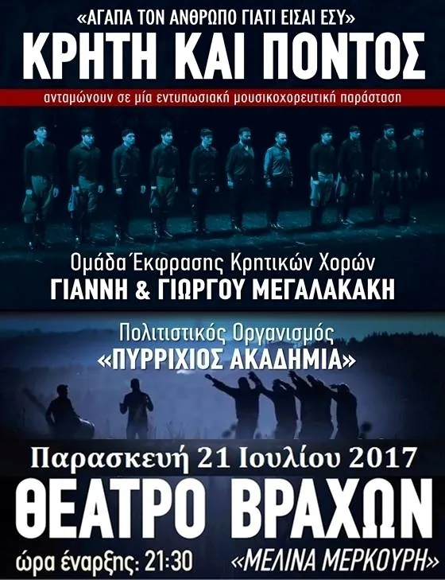
«Αγάπα τον άνθρωπο γιατί είσαι εσύ»
Η Κρήτη & ο Πόντος ανταμώνουν στο Θέατρο Βράχων σε μία εντυπωσιακή μουσικοχορευτική παράσταση. Ομάδα Έκφρασης Κρητικών Χορών Γιάννη & Γιώργου Μεγαλακάκη και Πολιτιστικός Οργανισμός «Πυρρίχιος Ακαδημία». Φεστιβάλ Βύρωνα 2017, Θέατρο Βράχων «Μελίνα Μερκούρη».
2016
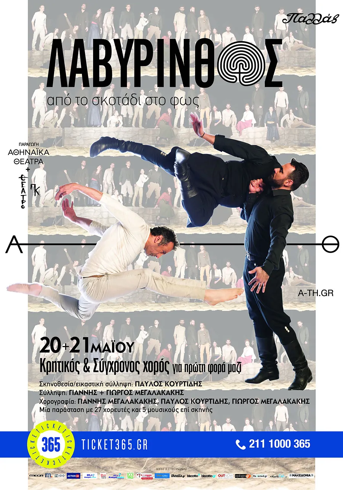
«Λαβύρινθος, από το σκοτάδι στο φως»
Μια χοροθεατρική παράσταση στο θέατρο Παλλάς στην Αθήνα. Για πρώτη φορά στην Ελλάδα ο κρητικός χορός αντάμωσε επί σκηνής με τον σύγχρονο χορό. Επίλεκτοι χορευτές της Ομάδας των αδερφών Μεγαλακάκη σύμπραξαν με την ομάδα σύγχρονου χορού του χορογράφου – σκηνοθέτη Παύλου Κουρτίδη. Σκηνοθεσία: Παύλος Κουρτίδης. Έπαιξαν οι μουσικοί: Γιώργος Κοντογιάννης, Δημήτρης Βαρελόπουλος, Ανδρέας Αρβανίτης, Μαρίνος Τρανουδάκης και Βασίλης Τσεντούρος.
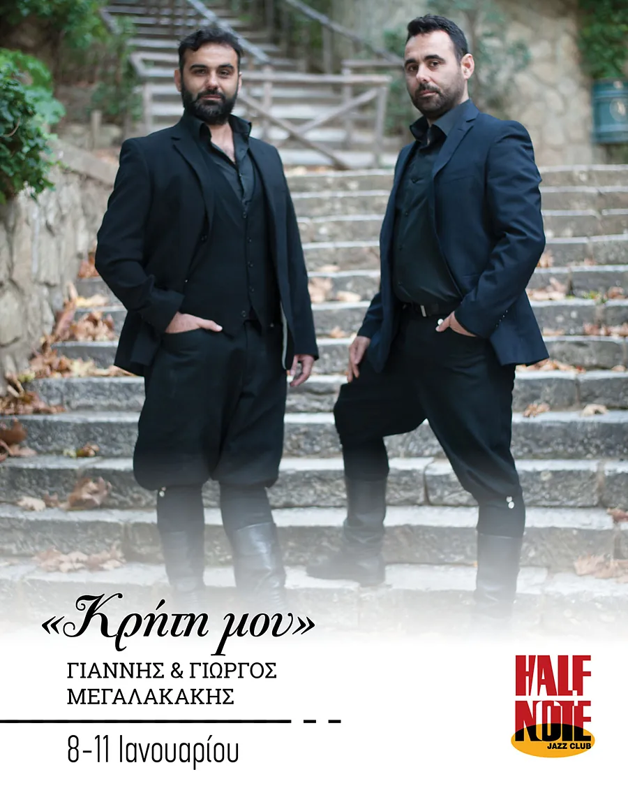
«Κρήτη μου»
Μία μουσικοχορευτική παράσταση στη μουσική σκηνή Half Note. Ο Γιάννης και ο Γιώργος Μεγαλακάκης και οι επίλεκτοι χορευτές τους παρουσίασαν κρητικούς χορούς σε μία διάσημη σκηνή της Αθήνας για πρώτη φορά στην ιστορία του ελληνικού χορού. Μαζί τους ήταν οι μουσικοί Γιώργος Κοντογιάννης και Δημήτρης Βαρελόπουλος.
2015
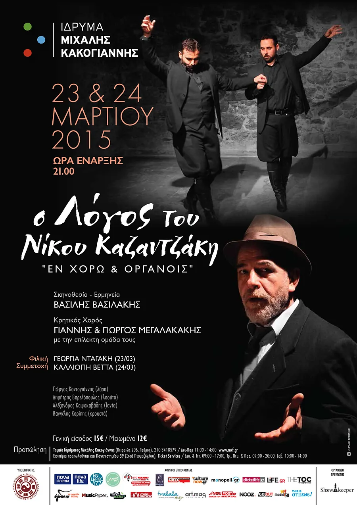
«Ο λόγος του Νίκου Καζαντζάκη εν χορώ & οργάνοις»
Μια χοροθεατρική παράσταση στο Ίδρυμα Μιχάλης Κακογιάννης στην Αθήνα. Επίλεκτοι χορευτές της Ομάδας των αδερφών Μεγαλακάκη σύμπραξαν επί σκηνής με τον ηθοποιό Βασίλη Βασιλάκη και με τους μουσικούς Γιώργο Κοντογιάννη, Δημήτρη Βαρελόπουλο, Αλέξανδρο Καψοκαβάδη και Βαγγέλη Καρύπη. Σκηνοθεσία & ερμηνεία: Βασίλης Βασιλάκης. Συμμετείχαν φιλικά οι Γεωργία Νταγάκη και Καλλιόπη Βέττα.
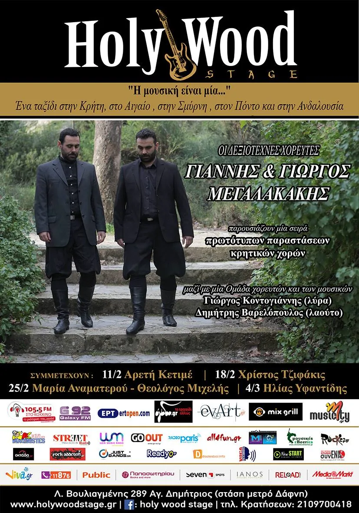
«Η μουσική είναι μία»
Μία μουσικοχορευτική παράσταση στη μουσική σκηνή HolyWood στην Αθήνα. Σε μία σειρά εμφανίσεων ο Γιάννης και ο Γιώργος Μεγαλακάκης και οι επίλεκτοι χορευτές τους παρουσίασαν κρητικούς χορούς και σύμπραξαν επί σκηνής με την ερμηνεύτρια και μουσικό Αρετή Κετιμέ, την ερμηνεύτρια Μαρία Αναματερού, τον κιθαρίστα Χρίστο Τζιφάκη και τον πόντιο λυράρη Ηλία Υφαντή. Μαζί τους ήταν οι μουσικοί Γιώργος Κοντογιάννης και Δημήτρης Βαρελόπουλος.
2014
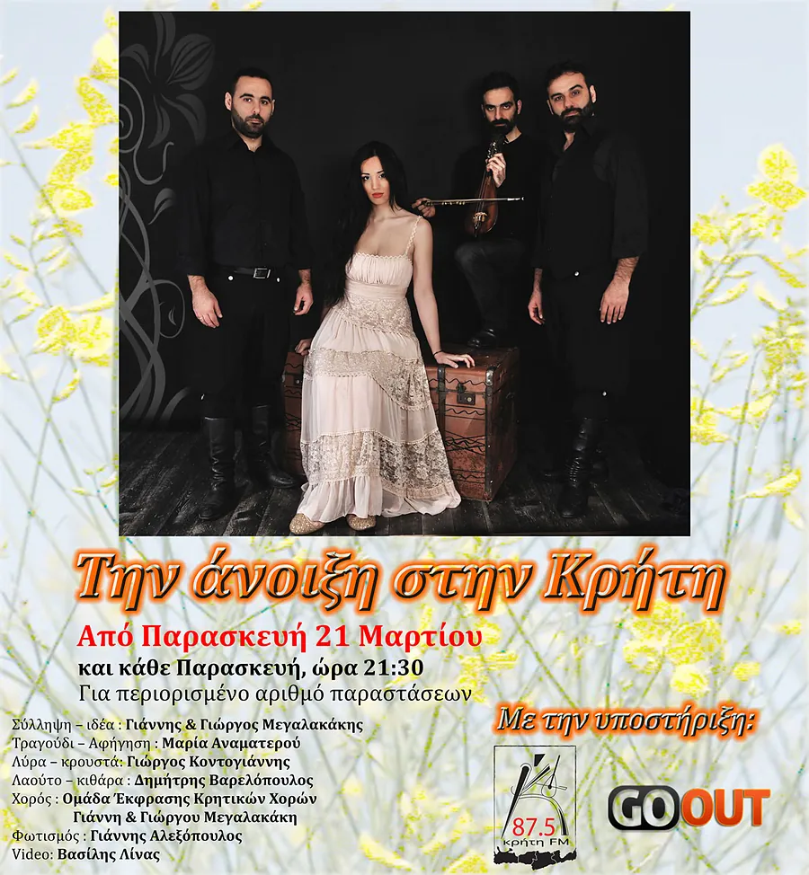
«Την άνοιξη στην Κρήτη»
Μία μουσικοχορευτική παράσταση με θέμα την άνοιξη στο θέατρο ΠΚ στην Αθήνα, στην οποία επίλεκτοι χορευτές της Ομάδας των αδερφών Μεγαλακάκη σύμπραξαν με τη νέα ερμηνεύτρια και τραγουδοποιό Μαρία Αναματερού, τον λυράρη Γιώργο Κοντογιάννη και τον μουσικό Δημήτρη Βαρελόπουλο.
2013
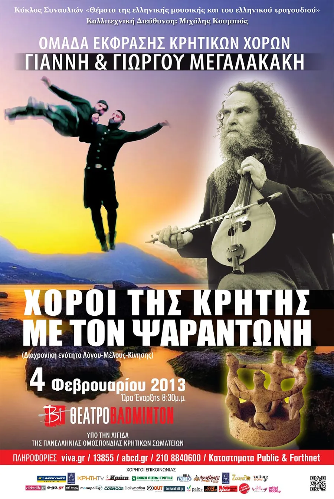
«Οι Χοροί της Κρήτης»
Μία σπάνια μουσικοχορευτική παράσταση στο θέατρο Badminton στην Αθήνα μαζί με τον Ψαραντώνη και την πολυμελή χορευτική τους Ομάδα.
«Όσα ταξίδια»
Μία μουσικοχορευτική παράσταση με τους Στέλιο Σταματογιαννάκη, Κώστα Κακουδάκη, Ηλία Σαββάκη και άλλους στο θέατρο Κρεμαστός στον Εμπρόσνερο Αποκορώνου στα Χανιά και στο κηποθέατρο Μάνος Χατζιδάκης στο Ηράκλειο.
«Ανάμεσα σε δυο ποτάμια»
Μουσικοχορευτική παράσταση με φλαμένκο και κρητική μουσική και χορούς στο Φεστιβάλ Υακίνθεια στα Ανώγεια. Ο σημαντικός ισπανός χορευτής φλαμένκο Oscar De Los Reyes, μαζί με τη χορεύτρια Ελένη Παπαδοπούλου, συνέπραξε χορευτικά με τους Γιάννη και Γιώργο Μεγαλακάκη. Μαζί τους ήταν ο σπουδαίος κιθαρίστας – συνθέτης Χρήστος Τζιφάκης. Συμμετείχαν: Όθωνας Μπικάκης λύρα, Μιχάλης Σταυρουλάκης και άλλοι.
2012
«Χορεύω αιώνες στην Κρήτη»
Μουσικοχορευτική παράσταση με τον Όθωνα Μπικάκη και τους μουσικούς του στο θέατρο Παπαδημητρίου στη Χαλκίδα.
«Φτάσε όπου δεν μπορείς»
Στο θέατρο ΠΚ στην Αθήνα, στο θέατρο Δόρα Στράτου και στο θέατρο Άλσους Βεΐκου, όπου επίλεκτοι χορευτές της Ομάδας των αδερφών Μεγαλακάκη σύμπραξαν με δημοφιλείς στο είδος τους μουσικούς και χορευτές από διάφορες περιοχές της Ελλάδας και με τον Χορευτικό Όμιλο Ποντίων Σέρρας. Τους συνόδευσαν οι Όθωνας Μπικάκης, Νίκος Βενετάκης και Ανδρέας Φασάκης.
2011
«Αν έχει η Κρήτη δυο ψυχές»
Μουσικοχορευτική παράσταση με τον Βασίλη Σκουλά στον πολυχώρο Δαίς στην Αθήνα.
2010
«Το νησί που χορεύει»
Παράσταση ιδιαίτερη. Ένας μουσικοχορευτικός διάλογος με τον Πάρι Περυσινάκη και τους μουσικούς του στη μουσική σκηνή Αυλαία στην Αθήνα.
«Ένα ταξίδι στην καρδιά της κρητικής παράδοσης»
Μουσικοχορευτική παράσταση στο θέατρο Nouveau Théâtre de la Sorbonne στο Παρίσι. Μουσικοί της παράστασης ήταν ο Άρης Πρεβεζάνος και ο Έκτορας Κυριάκου.
«Χορεύω αιώνες στην Κρήτη»
Με τον Γιώργο Σκορδαλό και τους μουσικούς του στο Πνευματικό Κέντρο Καλαμάτας. Και σπάνια μουσικοχορευτική παράσταση στο Φεστιβάλ Υακίνθεια στα Ανώγεια με τη μουσική συνοδεία του Κώστα Σαριδάκη και των μουσικών του.
2009
«Κρητικός χορός, η φωνή του σώματος»
Παράσταση χορευτικών αυτοσχεδιασμών στη μουσική σκηνή Αυλαία στην Αθήνα. Μουσικοί της παράστασης ήταν ο Άρης Πρεβεζάνος και ο Έκτορας Κυριάκου. Και «Όταν ακούω Κρήτη» με τον Γιώργο Σκορδαλό και τους μουσικούς του στο θέατρο Θανάσης Βέγγος στον Κορυδαλλό.
2008
«Παράσταση στο θέατρο Βράχων · Αντάμωση στο Κάστρο»
Παράσταση χορού και μουσικής με τους Γιάννη Ξυλούρη, Γιώργη Ξυλούρη (Ψαρογιώργη), Ψαραντώνη, Μάνο Πυροβολάκη κ.ά. στο θέατρο Βράχων στην Αθήνα. «Αντάμωση στο Κάστρο»: μουσικοχορευτική παράσταση με τους Γιώργο Χαλκιαδάκη και Γιώργο Μανωλιούδη στο θέατρο Ερωφίλη στο κάστρο Φορτέτσα στο Ρέθυμνο.
2007
«Αναφορά στην Κρήτη · Για ιδές περβόλι όμορφο · Η Κρήτη των ονείρων»
«Αναφορά στην Κρήτη» με τον Βασίλη Σκουλά στο θέατρο Παπάγου στην Αθήνα. «Για ιδές περβόλι όμορφο» με τον Βασίλη Σταυρακάκη στο κηποθέατρο Ν. Καζαντζάκης στο Ηράκλειο. «Η Κρήτη των ονείρων» με τους Γιάννη Ξυλούρη, Γιώργη Ξυλούρη (Ψαρογιώργη) κ.ά. στο Κέντρο Τεχνών Χαλανδρίου, με φιλική συμμετοχή του Μάνου Πυροβολάκη. Και σπάνια μουσικοχορευτική παράσταση στο Φεστιβάλ Υακίνθεια στα Ανώγεια με τη μουσική συνοδεία του Πέτρου Σαριδάκη.
2006
«Όταν ακούω Κρήτη · Για ιδές περβόλι όμορφο»
«Για ιδές περβόλι όμορφο» με τον Πέτρο Σαριδάκη και άλλους στο θέατρο ελληνικών χορών Δόρα Στράτου (φιλική συμμετοχή: Νίκος Ανδρουλάκης, Ζαχαρίας Σπυριδάκης, Γιώργος Ξυλούρης – Ψαρογιώργης και η ηθοποιός Γιούλη Τσαγκαράκη). «Όταν ακούω Κρήτη» με τους Πέτρο Σαριδάκη, Αντώνη Μαρτσάκη κ.ά. στο θέατρο του Υακίνθου στα Ανώγεια, στην Πλατεία Ελευθερίας στο Ηράκλειο και στο θέατρο Rialto στη Λεμεσό της Κύπρου.
2005
«Όταν ακούω Κρήτη»
Με τους Πέτρο Σαριδάκη, Αντώνη Μαρτσάκη, Αλέξανδρο Παπαδάκη κ.ά. στο Νέο Μουσείο Μπενάκη στην Αθήνα, και με τον Δημήτρη Βακάκη κ.ά. στο θέατρο της Ανατολικής Τάφρου στα Χανιά.
2004
«Ο χορός στην Κρήτη»
Με τους Αντώνη Μαρτσάκη, Γιώργο Στριλιγκά, Αλέξανδρο Παπαδάκη κ.ά. στο θέατρο Κνωσός στην Αθήνα. Αφήγηση κειμένων: ο ηθοποιός Γιάννης Δρίτσας.
2003
«Άρωμα Κρήτης»
Με τον Δημήτρη Σγουρό στο κάστρο Καζάρμα στη Σητεία.
2000
«Σεργιάνισμα στην Κρήτη»
Με το μουσικό σύνολο Παλαιϊνά Σεφέρια στο θέατρο Μινώα στην Αθήνα.
1998
«Σεργιάνισμα στην Κρήτη»
Με τον Μιχάλη Τζουγανάκη στο θέατρο Μινώα στην Αθήνα.
Έρευνα – Εκδόσεις
Βιβλία, ταινίες & καταγραφές
Από το ρόδο… βγαίνει ρόδο
«Το νέο παραμύθι μου το εμπνεύστηκα από την κρητική παροιμία: “Απ’ τ’ αγκάθι βγαίνει ρόδο, κι απ’ το ρόδο βγαίνει αγκάθι”. Η μικρή ιστορία πραγματεύεται τη σχέση γονέων και παιδιών και το πόσο σημαντικά είναι τα παιδικά μας βιώματα μέσα από την οικογένεια και οι εικόνες που καταγράφει μια παιδική ψυχή μέσα σε αυτή.»
Τα στιβάνια του παππού
Ένα παραμύθι για μικρούς και μεγάλους. Σε γειώνει μαζί με τα στιβάνια του· σε κάνει να νιώθεις πως είσαι σε επαφή με τις ρίζες σου — άλλωστε, αυτός είναι ένας από τους λόγους που δημιουργήθηκαν αυτά τα βαριά υποδήματα. Ο Γιάννης Μεγαλακάκης αποτύπωσε με πολλή γλυκύτητα την ιστορία του Βιτσέντζου και η εικονογράφος Δήμητρα Πέππα άπλωσε με χρώμα όλα τα συναισθήματα του μικρού ήρωα αλλά και ενός παιδιού.
Αγαπημένη λέξη μου έγινε τ’ όνομά σου
Το δεύτερο βιβλίο του Γιάννη Μεγαλακάκη, αφιερωμένο στον μεγάλο στοχαστή Νίκο Καζαντζάκη: μαντινάδες μέσα από τις οποίες υμνεί τον έρωτα με έναν δικό του τρόπο. Προλογίζει ο ηθοποιός και Καλλιτεχνικός Διευθυντής του ΔΗ.ΠΕ.ΘΕ. Κρήτης Μιχάλης Αεράκης. Κυκλοφόρησε τον Δεκέμβριο του 2015 από τις εκδόσεις CaptainBook. Σκίτσο εξωφύλλου: η ζωγράφος Σωτηρία Κανδυλώρου· επεξεργασία φωτογραφιών: η φωτογράφος Δήμητρα Παναγοπούλου.
Χορεύω αιώνες στην Κρήτη
Ένα οδοιπορικό-ντοκουμέντο σε ολόκληρη την Κρήτη: ηλικιωμένοι αλλά και νέοι χορευτές χορεύουν σπάνιους τοπικούς χορούς και περιγράφουν τα παλιά γλέντια, τους χορευτές, τους παλιούς μουσικούς· παράλληλα, οι σημαντικότερες χορευτικές στιγμές της Ομάδας από παραστάσεις, σεμινάρια και πρόβες μεταξύ 2006 και 2011. Κυκλοφορεί από το 2011 και διανέμεται μόνο στις παραστάσεις, τα μαθήματα και τα σεμινάρια των αδερφών Μεγαλακάκη.
Χορογράφοντας
Μία πρωτότυπη ιδέα στην οποία οι μαντινάδες, οι σκέψεις και ο τρόπος γραφής του Γιάννη Μεγαλακάκη συνυπάρχουν με φωτογραφίες χορού, με σπάνιο οπτικοακουστικό υλικό (DVD+CD) για την κρητική μουσικοχορευτική παράδοση. Τη φροντίδα της έκδοσης έχει η ζωγράφος-χαράκτρια Ρουμπίνα Ρόκου-Σαρελάκου, την καλλιτεχνική επιμέλεια η Κατερίνα Καλπούζου· προλογίζει ο στιχουργός Κώστας Φασουλάς. Κυκλοφορεί από το 2010 από τις εκδόσεις Δοκιμάκης.
Όταν ακούω Κρήτη
Οδοιπορικό – ντοκουμέντο σε ολόκληρη την Κρήτη, από το Καστέλι Κισσάμου έως την Κάτω Ζάκρο — για πρώτη φορά από χοροδιδασκάλους. Παρουσιάζονται 19 κρητικοί χοροί, από τους πλέον διαδεδομένους μέχρι τους πιο σπάνιους τοπικούς. Κυκλοφορεί από το 2006 από τη δισκογραφική εταιρεία ΣΕΙΣΤΡΟΝ (2 DVD, 1 CD και ενημερωτικό έντυπο) και παρουσιάζει την παράσταση «Όταν ακούω Κρήτη» στο Νέο Μουσείο Μπενάκη, στις 19 Μαρτίου 2005.
Έρευνα των κρητικών χορών
Η οικογένειά μας και ο τρόπος που μεγαλώσαμε ήταν καθοριστικός για να λατρέψουμε και να θαυμάσουμε από πολύ μικρή ηλικία τους κρητικούς χορούς. Μέσω του χορού της Κρήτης έχουμε γνωρίσει την τέχνη, τη ζωή, τον έρωτα, τα ταξίδια, άλλους πολιτισμούς και τον ψυχικό μας κόσμο. Κάθε φορά που χορεύουμε νιώθουμε ότι αλλάζουμε χωροχρόνο και είναι σαν να ενώνεται μέσα μας το παρελθόν με το μέλλον. Ο χορός για τους Κρήτες είναι η εκφραστικότερη απόδοση του ψυχικού τους κόσμου, η ατομική επανάσταση και αντίσταση του πνεύματός τους, η συνέχεια των προγόνων αλλά και ο τρόπος να μιλήσουν στο σήμερα και στο αύριο. Είναι η ταυτότητά μας.
Ο κρητικός χορός έχει ιστορία πάνω από 3.000 χρόνια, άρα είναι μνημείο του παγκόσμιου πολιτισμού. Τον προσεγγίζουμε σαν μία τέχνη με οικουμενική εμβέλεια και δυναμική, και ο θεατής το εισπράττει αυτό μέσω των μινωικών κινήσεων των χεριών, των πυρρίχιων βημάτων, των εκφράσεων του προσώπου του χορευτή. Ο κρητικός χορός μιλάει στην ψυχή όλων των ανθρώπων, ανεξάρτητα καταγωγής ή εθνικότητας.
Επικοινωνία
Ας χορέψουμε μαζί
Για μαθήματα, σεμινάρια, το online πρόγραμμα, παραστάσεις ή συνεργασία με τον σύλλογό σας — καλέστε μας ή στείλτε μήνυμα.